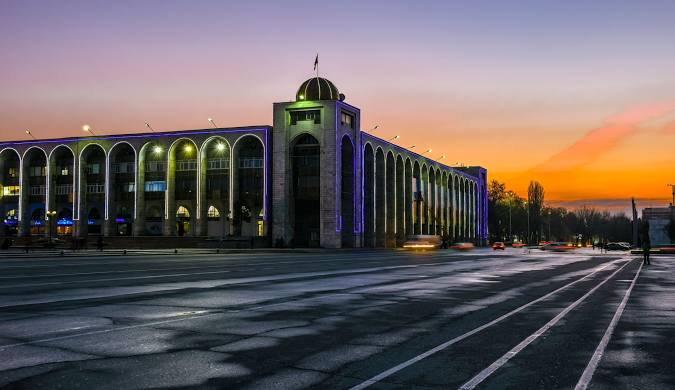

О Бишкеке
Бишкек — столица и крупнейший город Кыргызстана. Город расположен у подножия гор Тянь-Шаня, что делает его уникальным местом для жизни и отдыха. Здесь вы найдёте богатую культуру, исторические памятники, живописные парки и яркие рынки, такие как Ошский базар. Бишкек — это город, где традиции встречаются с современностью.
Популярные достопримечательности

Площадь Ала-Тоо
Центральная площадь города, где проходят праздники, концерты и мероприятия. Здесь также расположены памятник Манасу и Государственный исторический музей.

Ошский базар
Яркий и шумный рынок, где можно купить местные продукты, специи, сувениры и попробовать национальную кухню.